Peer Storage
数据结构关系
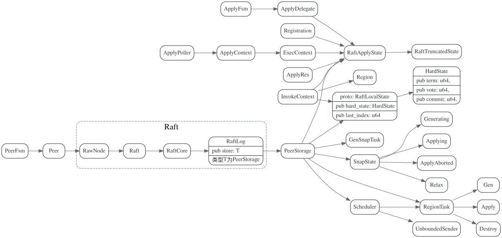
#![allow(unused_variables)] fn main() { pub trait Storage { fn initial_state(&self) -> Result<RaftState>; fn entries(&self, low: u64, high: u64, max_size: u64) -> Result<Vec<Entry>>; fn term(&self, idx: u64) -> Result<u64>; fn first_index(&self) -> Result<u64>; fn last_index(&self) -> Result<u64>; fn snapshot(&self) -> Result<Snapshot>; } }
RaftState 更新和保存
collect_ready
每次handle_msg后，都会调用collect_ready，处理raft中ready的hard state, log entries, committed log entries, snapshot等
log entries和raft_state 会先写入PollContext::raft_wb，在最后RaftPoller::end时，会将PollContext:raft_wb写入rocksdb。
写入完毕后，再更新PeerStorage的raft_state, last_term, last_index一些成员变量。
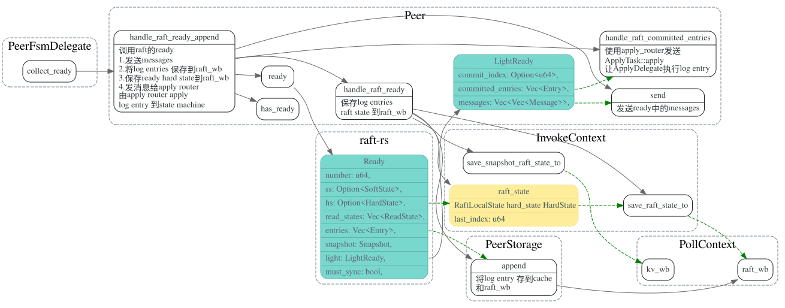
PeerStorage::handle_raft_ready
将Ready的hs, entries, snapshot信息等写入 PollContext的write batch中, 写完后这些信息还没有保存到磁盘上。
要等到RaftPoller.handle_raft_ready中将write_batch写入rocksdb中.
-
调用
append将Ready.entries写入PollContext.raft_wb -
调用
save_apply_sate_to将PeerStorage.apply_state写入PollContext.kv_wb -
调用
save_raft_state_to将raft_state(包含了Ready.hs) 写入PollContext.raft_wb -
将
Ready.hs和snap_index写入PollContext.k_wb, 保存原因如下(需要研究下为啥）
#![allow(unused_variables)] fn main() { // in case of restart happen when we just write region state to Applying, // but not write raft_local_state to raft rocksdb in time. // we write raft state to default rocksdb, with last index set to snap index, // in case of recv raft log after snapshot. }
最后返回一个InvokeContext,在后面保存完wb中数据后，再调用post_ready传回来。
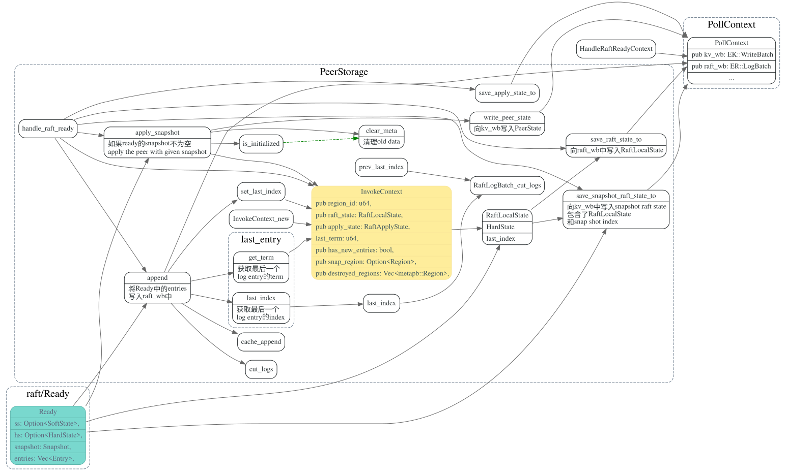
RaftPoller::handle_raft_ready
将PollContext.raft_wb, PollContext.kv_wb 写入rocksdb之后, 调用PeerStorage的
post_ready, 更新PeerStorage 的成员变量。此处传入post_ready
的InvokeContext，就是PeerStorage::handle_raft_ready所返回的.
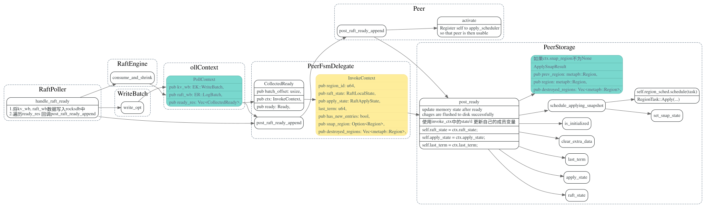
在post_ready中，如果ready有snapshot, 则会调用schedule_applying_snapshot
由worker/region.rs中的snap-generator线程池来apply snapshot.
Apply State
AppDelegate 执行committed entries, 并更新apply state的applied_index
调用write_apply_state 将applied index写入kv_wb。kv_wb在commit 时
被写入rocksdb。
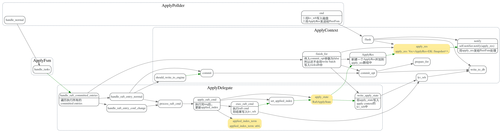
数据写完后，会发消息给raft router，发送的ApplyRes数据结构如下,
其包含了apply_state和applied_index_term, apply_state中记录了 last_applied_index
#![allow(unused_variables)] fn main() { #[derive(Debug)] pub struct ApplyRes<S> where S: Snapshot, { pub region_id: u64, pub apply_state: RaftApplyState, pub applied_index_term: u64, pub exec_res: VecDeque<ExecResult<S>>, pub metrics: ApplyMetrics, } }
PeerStorage 更新apply_state， applied_index_term, 先写入raft_wb, 在RaftPoller::end
中将raft_wb写入rocksdb.
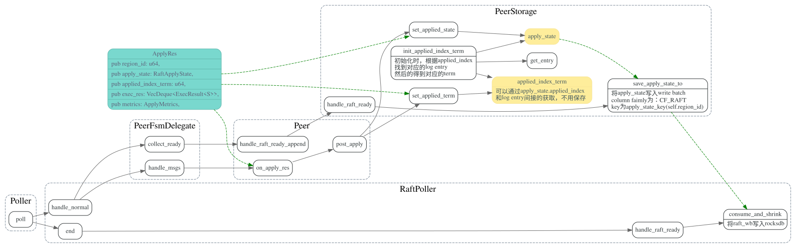
PollContext/ApplyContext
PollContex和ApplyContext的创建过程如下:
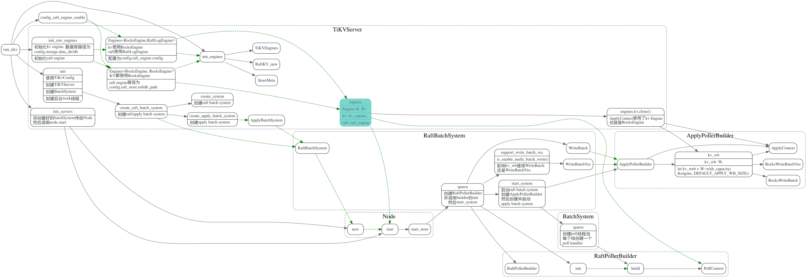
RaftLogEngine
TiKV中可以打开config.raft_log.enable，使用RaftLogEngine来存储raft log entry，它对于raft log entry的保存做了专门的优化，
相应repo见： raft-engine, 如果该配置没打开的话，就使用RocksEngine来存raft log entry.
RocksWriteBatchVec
如果rocksdb.is_enable_multi_batch_write 这个是true，ApplyDelegate的会使用RocksWriteBatchVec, 否则就用RocksWriteBatch
RocksWriteBatchVec的定义如下：
#![allow(unused_variables)] fn main() { /// `RocksWriteBatchVec` is for method `multi_batch_write` of RocksDB, which splits a large WriteBatch /// into many smaller ones and then any thread could help to deal with these small WriteBatch when it /// is calling `AwaitState` and wait to become leader of WriteGroup. `multi_batch_write` will perform /// much better than traditional `pipelined_write` when TiKV writes very large data into RocksDB. We /// will remove this feature when `unordered_write` of RocksDB becomes more stable and becomes compatible /// with Titan. pub struct RocksWriteBatchVec { db: Arc<DB>, wbs: Vec<RawWriteBatch>, save_points: Vec<usize>, index: usize, cur_batch_size: usize, batch_size_limit: usize, } }
Snapshot
PeerStorage会异步的去gen/apply snapshot.
#![allow(unused_variables)] fn main() { pub enum SnapState { Relax, Generating(Receiver<Snapshot>), Applying(Arc<AtomicUsize>), ApplyAborted, } }
Snapshot相关trait,定义在store/snap.rs中
#![allow(unused_variables)] fn main() { /// `Snapshot` is a trait for snapshot. /// It's used in these scenarios: /// 1. build local snapshot /// 2. read local snapshot and then replicate it to remote raftstores /// 3. receive snapshot from remote raftstore and write it to local storage /// 4. apply snapshot /// 5. snapshot gc pub trait Snapshot<EK: KvEngine>: GenericSnapshot { fn build( &mut self, engine: &EK, kv_snap: &EK::Snapshot, region: &Region, snap_data: &mut RaftSnapshotData, stat: &mut SnapshotStatistics, ) -> RaftStoreResult<()>; fn apply(&mut self, options: ApplyOptions<EK>) -> Result<()>; } /// `GenericSnapshot` is a snapshot not tied to any KV engines. pub trait GenericSnapshot: Read + Write + Send { fn path(&self) -> &str; fn exists(&self) -> bool; fn delete(&self); fn meta(&self) -> io::Result<Metadata>; fn total_size(&self) -> io::Result<u64>; fn save(&mut self) -> io::Result<()>; } }
Gen Snapshot
PeerStorage::snapshot
leader peer调用snapshot来生成region的snapshot发给follower
snapshot的生成是异步的,
会由专门的worker/region来处理处理完毕后，通过channel的tx来通知snapshot已OK,
等leader下次调用snapshot时，去从channel try_recive 生成的snapshot
如果snapshot没生成好，SnapshotTemporarilyUnavailable错误，leader过段时间再来轮询。
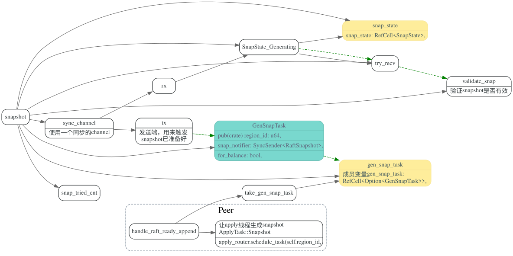
ApplyFsm::handle_snapshot
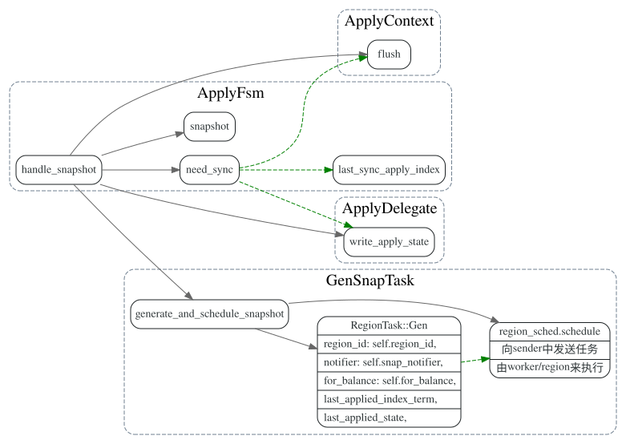
worker/region.rs: handle_gen
在worker/region 的snap-generator线程池中执行生成snapshot的任务
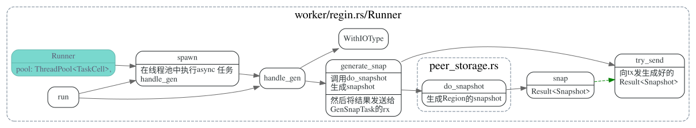
peer_storage.rs: do_snapshot
kv_snap 是在哪儿传过来的。。
生成snapshot, 包含了metadata和数据部分
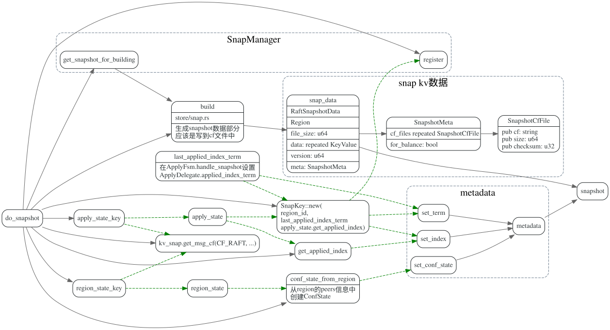
store/snap.rs: build
生成snapshot数据部分，将数据写入cf文件中.
#![allow(unused_variables)] fn main() { pub const SNAPSHOT_CFS_ENUM_PAIR: &[(CfNames, CfName)] = &[ (CfNames::default, CF_DEFAULT), (CfNames::lock, CF_LOCK), (CfNames::write, CF_WRITE), ]; pub const CF_DEFAULT: CfName = "default"; pub const CF_LOCK: CfName = "lock"; pub const CF_WRITE: CfName = "write"; }
对于上面的每个column family，扫描region的所有key,value，写入文件中。
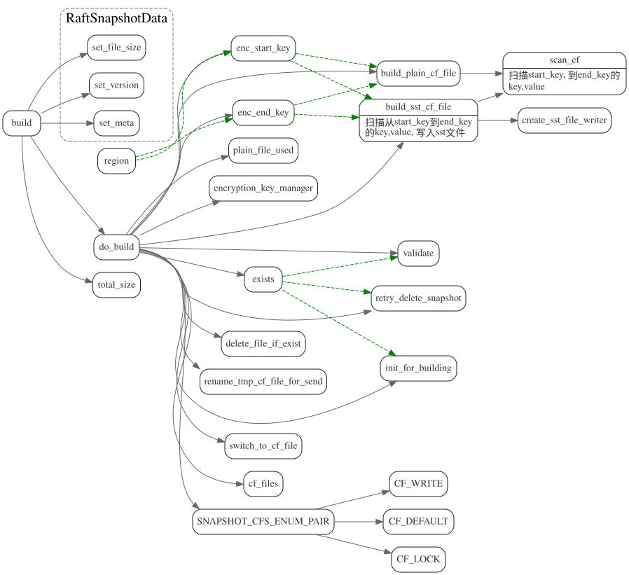
Apply Snapshot
worker/region: handle_apply
在snap-generator线程池中，执行apply_snap, 导入数据到rocksdb中
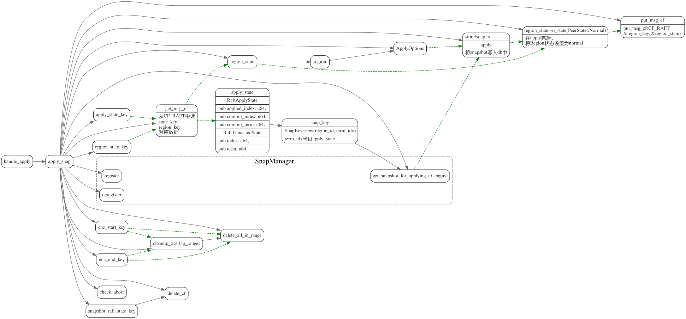
store/snap.rs: apply
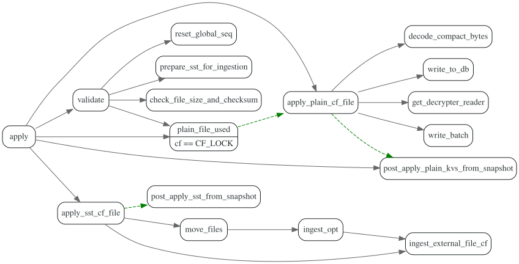
draft
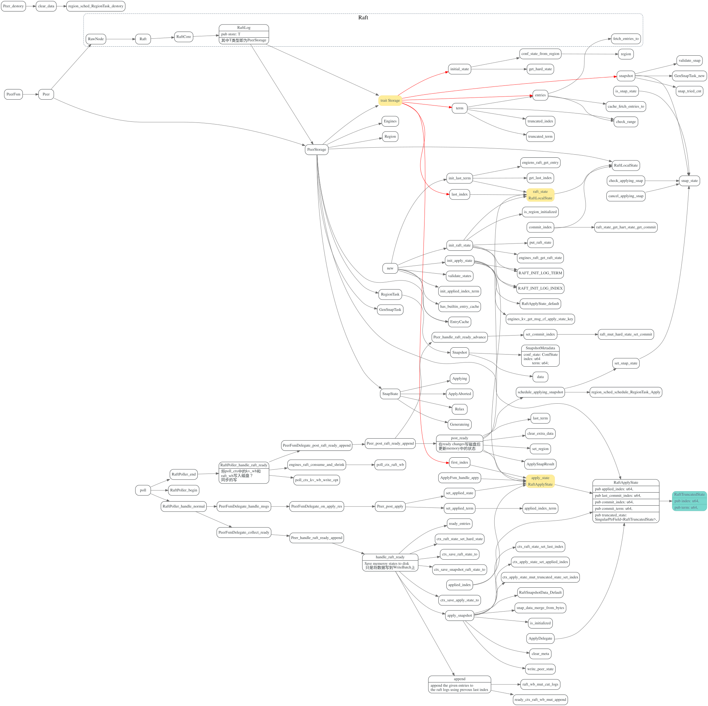
ApplyDelegate 的apply_state和PeerStorage 中的apply state之间关系?
这两者之间怎么同步的呢？
#![allow(unused_variables)] fn main() { /// TiKV writes apply_state to KV RocksDB, in one write batch together with kv data. /// /// If we write it to Raft RocksDB, apply_state and kv data (Put, Delete) are in /// separate WAL file. When power failure, for current raft log, apply_index may synced /// to file, but KV data may not synced to file, so we will lose data. apply_state: RaftApplyState, }
#![allow(unused_variables)] fn main() { #[derive(Debug, Copy, Clone, Serialize, Deserialize)] pub struct RaftTruncatedState { pub index: u64, pub term: u64, } #[derive(Debug, Copy, Clone, Serialize, Deserialize)] pub struct RaftApplyState { pub applied_index: u64, pub commit_index: u64, pub commit_term: u64, pub truncated_state: RaftTruncatedState, } }
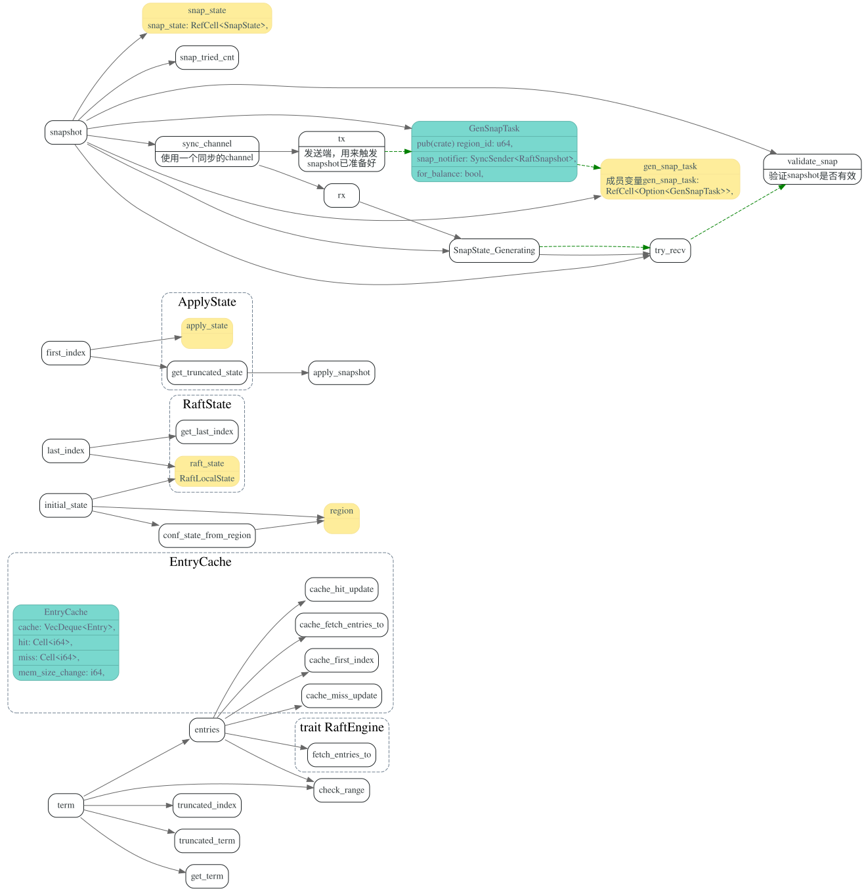
RaftLogBatch
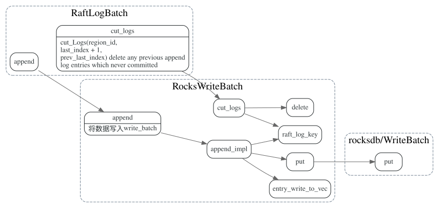